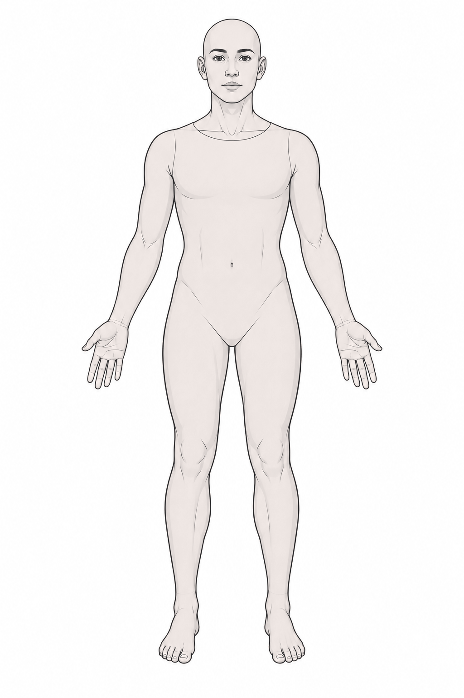

Configuración de dedos
La posición de los dedos.
La ELiS – Escrita das Línguas de Sinais, o Escritura de las Lenguas de Señas – es un sistema creado en 1998 por Mariângela Estelita Barros para registrar por escrito lenguas de señas como la Libras (Lengua de Señas Brasileña).
La fuente ELiS lleva este sistema a la computadora. En esta guía puedes probar la escritura, consultar las teclas y explorar la relación entre los glifos y el cuerpo.
El sistema tiene 96 visografemas básicos, organizados en cuatro grupos.
La posición de los dedos.
Hacia dónde se orienta la palma.
Dónde se articula la seña.
Movimientos con y sin las manos.
01 / LABORATORIO DE ESCRITURA
El ejemplo es una prueba de escritura, sin significado de seña atribuido. La fuente no traduce palabras del portugués a Libras.
02 / CONSULTA
Entradas organizadas según el cuadro “teclas detalhadas beta”. Todos los dibujos usan los archivos ELiS, versión 2.004.
Para consultar los caracteres instalados, busca Mapa de caracteres en el menú Inicio, abre la aplicación y selecciona ELiS. Elige el símbolo, haz clic en Seleccionar y luego en Copiar. Pégalo en el editor con Ctrl + V.
Los códigos Alt de esta consulta usan Windows-1252, con cero inicial y teclado numérico. Mantén pulsado Alt, escribe los números y suelta Alt. Activa Bloq Num. La configuración regional y la aplicación pueden cambiar el resultado; sin teclado numérico, usa el Mapa de caracteres o copia desde aquí.
Abre Edición → Emoji y símbolos o presiona Control + Comando + Espacio. En el Visor de caracteres, busca el código Unicode que aparece en esta consulta, selecciona el carácter y aplica ELiS al texto.
Para descubrir los atajos de tu distribución, abre el Visor de teclado desde el menú de entrada de la barra de menús. Presiona Opción y Mayús para ver las alternativas. Si el menú no aparece, actívalo en Ajustes del Sistema → Teclado → Entrada de texto → Editar.
q y Q no se intercambian.à es distinto de À.° es distinto de º.'2Q y dd se escriben en secuencia, sin espacios, en Windows y en Mac.Base: mapa de caracteres de los archivos ELiS. Instrucciones: códigos en Word, Mapa de caracteres y códigos Alt, atajos de Mac y Visor de teclado.
03 / RECURSOS DE LA FUENTE
En el punto de articulación, indican contacto con la región representada: simple o de paso (un trazo), dos toques (dos trazos), tres o más (tres trazos). Pruébalo en el cuerpo.
Escribe un apóstrofo simple ', el número 1, 2 o 3 y una entrada compatible, sin espacios.
A–Z, Ç, x, *, #, \, _, @, &, $ y %. Las reglas también aceptan apóstrofos curvos ‘ y ’, además de ª y º en lugar de A y O.
Las secuencias de abajo se combinan automáticamente en un único dibujo. Escribe las letras seguidas, sin espacios.
Son demostraciones tipográficas. El uso lingüístico de cada combinación sigue las reglas de ELiS.
Revisa la secuencia y el soporte de tu editor para las sustituciones contextuales OpenType. La fuente usa las funciones rclt y calt; el resultado puede variar entre aplicaciones.
04 / EXPLORACIÓN VISUAL
Explora los 35 puntos de articulación de la cabeza, el tronco y las extremidades. Elige una región y ve su entrada en ELiS.

Los botones muestran los glifos de la región. Toca para ver el nombre y la tecla. Figura de apoyo generada por IA. La marca ubica una región; no demuestra la ejecución de una seña ni define el lado del cuerpo.
Escribe
Esta prueba muestra solo el punto de articulación y su contacto. Una seña también puede requerir configuración de dedos, orientación de la palma y movimiento.
UNA SEÑA, CUATRO GRUPOS
Una lectura animada del ejemplo presentado por Barros (2016). La secuencia reúne configuración de dedos, orientación de la palma, punto de articulación y movimiento.
tgçQÄEsta animación acompaña la escritura; no demuestra la ejecución de la seña con las manos. Para eso se necesita una referencia gestual validada. Ver el ejemplo en la publicación de Barros.
Q corresponde al rostro. En el ejemplo BONITO de Barros (2016), la mano queda delante del rostro. Marcar una región en la figura no significa tocarla.
En la reunión del proyecto, el trazo simple indica contacto simple o de paso; dos trazos, dos toques en distintas áreas del mismo punto de articulación; tres, tres o más. Son glifos de la fuente, no el botón de subrayar del editor.
Los nombres y las teclas siguen el cuadro de 2016 y el mapa del proyecto. Las siete referencias de la mano siguen en el mapa de teclas; necesitan vistas propias para distinguir palma, dorso y dedos.
05 / INSTALACIÓN Y USO
ELiS EN TU COMPUTADORA Y EN TU SITIO
Regular, Negrita, Cursiva y Negrita Cursiva.
Versión 2.004: cuatro TTF para Mac y Windows, cuatro WOFF2 para sitios web y la guía de uso. Gratuita, bajo la licencia SIL Open Font License 1.1.
Extrae el ZIP para acceder a los archivos.
MAC / macOS
También puedes hacer doble clic en cada TTF y hacer clic en Instalar.
PC / WINDOWS
Otra opción: arrastra los TTF a Configuración → Personalización → Fuentes.
En Word, Pages u otro editor compatible con fuentes locales, aplica ELiS al fragmento que quieres escribir. Para el texto en portugués o español, elige otra fuente.
Usa el teclado común y consulta el mapa de teclas. Mayúsculas, minúsculas y acentos son entradas diferentes. La fuente escribe las señas; no traduce del portugués a Libras.
Usa los estilos de negrita y cursiva del editor. Para compartir el aspecto, exporta un PDF con las fuentes incrustadas y revisa el resultado. Quien edite el documento también necesita la fuente.
Cierra el programa y vuelve a abrirlo. En Mac, comprueba que la familia esté activa en el Catálogo Tipográfico. En Windows, intenta instalar para todos los usuarios. Las aplicaciones web pueden requerir una función propia para subir o acceder a fuentes locales.
QUIÉN CREÓ LA ELiS
Investigadora, profesora y creadora de una escritura para las lenguas de señas.
Mariângela Estelita Barros es profesora de la Facultad de Letras de la Universidad Federal de Goiás (UFG), en Brasil. Creó la ELiS en 1998, durante su investigación de maestría, y profundizó el sistema en el doctorado, concluido en 2008.
Su trabajo también acerca la escritura a la literatura: tradujo cuentos de los hermanos Grimm a ELiS, entre ellos El príncipe rana, Los doce cazadores y Los siete cuervos, publicados en una colección digital en 2021.
Lee la historia de ELiS: cómo una escritura hecha a mano se convirtió en fuente
Más información: Princípios básicos da ELiS, de Mariângela (2016, en portugués) · Literatura en ELiS en el Jornal UFG (2025, en portugués).
PARA SEGUIR APRENDIENDO
El artículo Um texto escrito em Libras/ELiS, de Guilherme Freitas, Mariângela Estelita Barros y Eliane Marquez (en portugués), presenta los fundamentos de la escritura y analiza una carta de invitación producida en Libras/ELiS. El estudio ayuda a ver la ELiS como recurso para producir textos y construir sentidos.
Libras es la Lengua de Señas Brasileña. ELiS es un sistema de escritura de las lenguas de señas. ELiS es también la fuente que dibuja los símbolos de ese sistema en la computadora. Para escribir una seña, hay que conocer su representación en ELiS.
No. La fuente cambia el dibujo de los caracteres, pero no traduce palabras ni frases. Un texto en Libras/ELiS debe escribirse a partir de la lengua de señas y de las reglas del sistema.
No. La fuente ya se carga en el navegador. Para escribir en un editor en tu computadora, descarga la familia ELiS, extrae el ZIP e instala los cuatro archivos TTF. Vuelve a abrir el editor si la familia todavía no aparece en el menú de fuentes.
Consulta el mapa de teclas: busca por nombre o filtra por grupo. Haz clic en la tarjeta para insertarla en el laboratorio o copiar la entrada. En tu editor, aplica ELiS al fragmento.
Comprueba que ELiS esté aplicada al fragmento y que la fuente esté instalada. En el sitio, espera a que cargue o recarga la página. Las letras indican que puede estar usándose otra fuente; los cuadraditos pueden indicar un carácter ausente. Revisa la entrada en el mapa.
El mapa de teclas reúne los 182 caracteres codificados en la fuente. En Windows, ofrece códigos y orientaciones para el Mapa de caracteres; en Mac, orienta la consulta con el Visor de caracteres. Los atajos con AltGr u Opción dependen de la distribución del teclado.
Sí. q y Q, así como à y À, tienen entradas diferentes. El grado ° es U+00B0; el ordinal º es U+00BA. Copia la entrada exacta del mapa cuando tengas dudas.
Escribe un apóstrofo simple, el número de trazos y una entrada compatible, sin espacios: '2Q, por ejemplo. Es una combinación de la fuente, no el comando de subrayar del editor. Consulta Cuerpo y glifos para los significados y las excepciones de uso.
Revisa los caracteres y quita los espacios entre ellos. Usa los archivos actuales de ELiS. El editor debe aplicar las sustituciones contextuales OpenType de la fuente; el soporte varía entre aplicaciones. Compara la misma secuencia en el laboratorio de este sitio.
Sí. Aplica ELiS solo a los fragmentos escritos en ELiS. Usa una fuente de texto para el español. Al copiar y pegar, revisa la fuente del fragmento, porque algunas aplicaciones conservan solo los caracteres.
Para compartir el aspecto, exporta un PDF con las fuentes incrustadas, cuando el editor lo permita, y revisa el resultado. Para enviar un archivo editable, la otra persona necesita la fuente y un editor compatible. Una imagen conserva el aspecto, pero el texto deja de ser editable.
El inventario de la fuente incluye caracteres de apoyo, combinaciones y variantes automáticas. Los 404 glifos no son 404 visografemas básicos. Los filtros del mapa reúnen 182 caracteres codificados; algunas secuencias activan otros dibujos automáticamente.
La figura ayuda a ubicar puntos de articulación. La animación de BONITO acompaña la lectura de la escritura. Ninguna de las dos sustituye una demostración gestual o el estudio de Libras y ELiS. Usa las referencias de la guía para profundizar el aprendizaje.